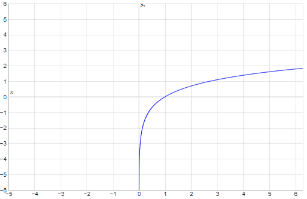
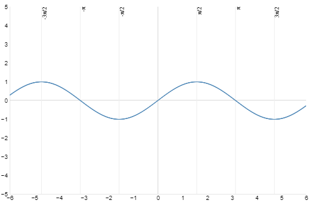

Reálna funkcia $$f$$ jednej premennej je zobrazenie množiny $$M$$, ktorá je časťou množiny reálnych čísel $$R$$, do množiny $$R$$. Funkcia $$f$$ je predpis, podľa ktorého každému reálnemu číslu x z množiny $$M \subset R$$ priradíme práve jedno reálne číslo $$y = f(x)$$.
$$f : M \rightarrow R, x \rightarrow f (x)$$
Číslo $$x \in M$$ je nezávislá premenná - argument funkcie, číslo $$y \in M$$ je závislá premenná - hodnota funkcie. Množina $$M = D(f)$$ sa nazýva definičný obor funkcie, funkcia je definovaná na množine $$M$$. Množina všetkých hodnôt funkcie je obor hodnôt $$H(f)$$.
je funkcia definovaná v $${\bf R}$$ rovnicou $$y = c $$ , Jej graf je priamka rovnobežná s osou $$x$$.
$$y= 1$$
je funkcia definovaná v $${\bf R}$$ rovnicou $$y=kx+q,$$ $$ k \neq 0$$ sa volá smernica.
Jej graf je priamka rôznobežná s osou $$x$$. Lineárna funkcia je:
a pretína os $$y$$ v bode $$[0,q]$$.
$$y= x+1$$
je funkcia definovaná v $${\bf R}$$ rovnicou $$y=ax^2+bx+c,\ \ \ a \neq 0.$$
Jej graf je parabola s osou rovnobežnou s osou $$y$$. Je otvorená nahor, ak $$a>0$$ a nadol, ak $$a <0$$. Jej vrchol je v bode $$\left[-\frac{b}{2a},\frac{4ac-b^2}{4a}\right]$$.
$$y= x^2 - 2x$$
je funkcia definovaná rovnicou $$ f(x)=x^a,$$ kde $$a$$ je reálne číslo.
Jej vlastnosti a graf závisia od exponentu $$a$$, napr.:
$$y= x^3$$
Pretože exponenciálna funkcia je monotónna, má inverznú funkciu. Táto sa volá logaritmická funkcia a označuje sa
$$ y = \log_a x$$ kde $$a > 0$$, $$a \neq 1$$ je reálna konštanta
nazývaná základ logaritmickej funkcie. Logaritmická funkcia so základom $$10$$ sa zapisuje $$\log x$$ namiesto $$\log_{10} x$$. Definičný obor logaritmickej funkcie je $$(0,\infty)$$, obor hodnôt je $${\bf R}$$ a je rastúca alebo klesajúca v závislosti od svojho základu rovnakým spôsobom ako exponenciálna funkcia. Medzi logaritmickými funkciami má dôležité postavenie funkcia $$\ln x = \log_e x$$, ktorá je inverzná k funkcii $$y=e^x$$, volá sa prirodzený logaritmus.
$$y=\ln x$$
sú to funkcie :
$$ y=\sin x,$$ $$ \quad y=\cos x,$$ $$\quad y=\mbox{tg}\,x,$$ $$ \quad y=\mbox{cotg}\,x,$$ $$\quad y=\sec x,$$$$\quad y=\mbox{cosec}\,x. $$
Funkcie sínus a kosínus majú definičný obor $${\bf R}$$ a sú periodické s periódou $$2\pi$$. Funkcia sínus je nepárna, funkcia kosínus je párna.
$$y=\sin x$$
$$y=\cos x $$
Funkcie tangens a kotangens sú nepárne, periodické funkcie s periódou $$\pi$$. Pre ich definičné obory platí $$D(\mbox{tg}\,)={\bf R}-\left\{(2n+1)\frac{\pi}{2}\right\}$$, $$n \in {\bf Z}$$ a $$D(\mbox{cotg}\,)={\bf R}-\{n\pi\}$$, $$n \in {\bf Z}$$.
$$y=\tan x$$
$$y=\cot x$$
Derivácia =
Množina všetkých bodov $$[x, y]$$ v rovine s danou karteziánskou súradnicovou sústavou $$Oxy$$, pre ktoré platí $$x \in D(f)$$ a $$y = f(x)$$ sa nazýva graf funkcie $$f(x)$$.
Normála:
Podľa vzorca: y = f(x0) - (1/ f'(x0)) * (x - x0)